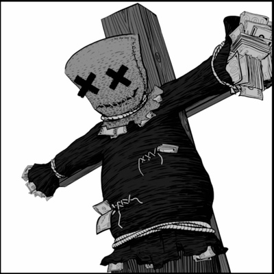
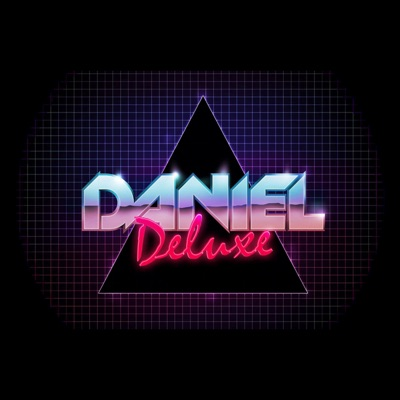

|  |
Джордан Эдвард Бенджамин более известен как grandson — канадско-американский музыкант, певец и автор песен. Выпускается под лейблом Fueled by Ramen. Автор популярного сингла «Blood//Water» и трилогии EP — Modern Tragedy. |
|
|  |
Daniel Alexandrovich, known professionally as Daniel Deluxe, is a Copenhagen-based, Russian electronic music producer. He has released three albums: Corruptor (2016), Instruments of Retribution (2017), and Exile (2020). Deluxe has also composed the scores for video games Desync (2017) and Ghostrunner (2020) |
|
|
Дэниел Джеймс Лихт — американский музыкант и композитор, автор музыки к кинофильмам и сериалам. Среди его работ — музыка для целого ряда фильмов в жанре ужасы, телевизионного сериала «Декстер», компьютерных игр Silent Hill: Downpour и Dishonored. |